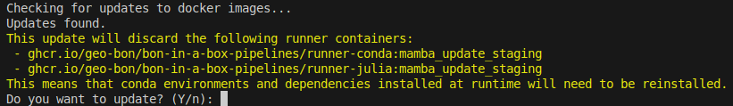

Install
The user interface allows the user to run and edit pipelines. You can access BON in a Box through the browser, but it accesses your local pipeline repository. The code for the scripts, however, is not edited through the UI but rather with a standard code editor such as VS Code or RStudio.
Video tutorial
Deploying BON in a Box locally
BON in a Box can be installed and ran on a local computer. While personal computers have less computing power than servers, it is more convenient for pipeline development, or when working with small examples. Users adding scripts and creating pipelines on their local computer can run them directly through BON in a Box in the user interface.
Prerequisites:
A GitHub account, and git installed on your computer
At least 6GB of free space (RAM requirements depend on the script that is being run)
A Linux shell
- This can be Terminal on a Mac or Git Bash on a PC
Step 1: Install Docker
Install Docker here
- Note: It is not necessary to make an account
- To test whether docker is added to the path of your terminal, run
docker run --rm hello-world - For Mac users: Make sure to check the chip of your machine and download the correct version.
- If there is an error message when running
docker run --rm hello-world, see https://stackoverflow.com/a/71923962/3519951 - If you encounter error
no matching manifest for linux/arm64/v8 in the manifest list entries, export DOCKER_DEFAULT_PLATFORM. See https://stackoverflow.com/a/76404045/3519951. - If you have a Silicon chip, check “Use Rosetta for x86_64/amd64 emulation on Apple Silicon” in the Docker Desktop preferences. See issue #175.
- If there is an error message when running
- For Linux users: Make sure to add your user to the docker group
Step 2: Generate SSH Key
First, make sure that you do not already have an SSH key registered to your computer by running
ls -al ~/.sshin your terminal.If you already have a key it will be called one of the following:
id_rsa.pub
id_ecdsa.pub
id_ed25519.pub
If you do not already have a key, generate one by running
ssh-keygen -t ed25519 -C "your_email@example.com"replacing the email with the email address associated with your GitHub account.- This will prompt you to make a passphrase. If you choose to have a passphrase, although more secure, it will prompt you to enter it many times while creating a pipeline so consider skipping this step for easier use. You can keep pressing enter to continue without creating a passphrase.
To check if you successfully generated the SSH key, you can run
ls -al ~/.sshin the terminal. Your SSH key should be there now.Now, open the file with your SSH key by running
cat ~/.ssh/<name of SSH key>e.g.cat ~/.ssh/id_ed25519.puband copy your SSH key.Now, add your SSH key to your GitHub account by going to GitHub settings > SSH and GPG keys and “New SSH key”. You can name this whatever you want and paste your SSH key into the “Key” field.
Step 3: Clone repository
- Clone repository (Windows users: make sure the cloned repo is under the user folder (`C:\Users\yourname\…`), and not under OneDrive.) This can be done in terminal using the following code:
git clone git@github.com:GEO-BON/bon-in-a-box-pipelines.gitor in GitHub desktop.
Step 4: Set environment file
Provide the environment variables: Open the newly cloned repository on your computer
Find the file called
runner-sample.envDuplicate the file and rename the copy to
runner.env.Fill the properties depending on what you intend to run. Include any API keys that you need to access data (e.g. GBIF or IUCN)
Adjust any server option as you see fit (optional).
Using a Linux terminal (terminal on Mac, Git Bash or WSL on Windows), navigate to the folder of the cloned repository.
If you are not in the same folder as the cloned repository, navigate to that folder so it can access the files. This can be done with `cd <folder name>`
- On Windows, the drives will be noted as
/c/instead ofC:\. The path should look like
` /c/Users/yourUsername/folder/bon-in-a-box-pipelines`
- On Windows, the drives will be noted as
In the Linux terminal, type
./server-up.shNote for windows users: this has to be a Linux terminal (e.g. git bash). Launching the server locally will not work using Powershell or Windows CMD terminal.
If using Docker Desktop, make sure you have docker open and running on your computer.
The first execution will be long, in order to download the micro-services. The next ones will be shorter or immediate, depending on the changes.
Network problems may cause the process to fail. First try running the command again. Intermediate states are saved so not everything will be redone even when there is a failure.
Windows users may need to turn on virtualization and other tools for Docker Desktop to work and update wsl (“wsl –update”, see https://docs.docker.com/desktop/troubleshoot/topics/#virtualization). Access to the BIOS may be required to enable virtualization.
The startup script might prompt you for an update. Accepting it is recommended.
Step 5: Opening BON in a Box in the browser
In a regular browser, type http://localhost/ to open BON in a Box
Head to the ““Run a Pipeline” and select the one that interests you. See Running a script or pipeline section.
Step 6: Stopping BON in a Box
Run
./server-down.shin the terminal to stop the server when doneOn Windows, to completely stop the processes, you might have to run
wsl --shutdown
Updating BON in a Box
Each time that the server is started, the startup script will check for updates and propose them. Type y for yes or press enter to update.
Accepting the updates are generally recommended, unless:
You are currently using an unstable, rate-limited, or billable Internet connection. Defer the update by typing
n(no) until a better internet connection is available. You can also use./server-up.sh --offlineoption to completely skip update checks. Use with caution, since this may create errors if elements of the repository depend on new server features.The runner containers need to be discarded, and you are using a pipeline that has installed dependencies. This is the case for a minority of script whose dependencies cannot be found on anaconda.org. Since we know that installing dependencies live can take a while, when the runners need an update, you will see a warning like this:

In this case, defer the update until you can afford the time to start a run that will reinstall the dependencies.
Deploying BON in a Box on a server
Installation steps on a server are the same as installing on a Linux computer, but some additional configurations need to be changed:
In
runner.env, choose the appropriateHTTP_ADDRESSandHTTP_PORTfor your server configuration. In a typical installation, use 0.0.0.0 as an HTTP address and default port (80).In
runner.env, select the “partial” cache cleaning mode. This will allow for calculated results to be long-lived on the server, as long as they are not run again with a new version of the script. The results in the output folder are always accessible by URL.In the case where a server is used for demonstration purposes only, set environment variable
BLOCK_RUNS=trueThe outputs are precious, while the server machine can be re-generated anytime. Consider mounting an external backed-up drive to the output folder of your BON in a Box installation.
By default, BON in a Box listens for http. To enable https, we hide it behind a reverse proxy (documentation here) and activate https with certbot (documentation here).
Troubleshooting
Here are some common installation errors and how to fix them.
You cannot launch the server
If you are having issues connecting to the server, make sure that you (1) have the docker desktop app open on your computer (2) are running
./server-up.shin a Linux terminal (e.g. Git Bash or WSL on Windows or Terminal on Mac), launching the server locally will not work with PowerShell nor CMD and (3) make sure you have an ssh key that is registered to your computer and GitHub.Docker crashes with Bad Gateway error
If you get an error that looks like
unable to get image 'ghcr.io/geo-bon/bon-in-a-box-pipelines/runner-julia:mamba_update_staging': request returned 502 Bad Gateway for API route and version http://%2F%2F.%2Fpipe%2FdockerDesktopLinuxEngine/v1.49/images/ghcr.io/geo-bon/bon-in-a-box-pipelines/runner-julia:mamba_update_staging/json, check if the server supports the requested API versionThis discussion suggests a few different causes for this type of error. One that proved to work with one of our users was to disable the “containerd image store” from the Docker Desktop settings.
BON in a Box is not visible on http://localhost
Conflicting ports may be an issue if you are on a Mac, or have Apache or NGINX installed. To fix this, edit the runner.env file and specify a different port (
HTTP_PORT). For example, if you setHTTP_PORT=5522, you can then access BON in a Box at http://localhost:5522.On my Mac, a script is taking way too long
If there is a significant difference in the duration of the scripts compared to users on Linux or Windows, and you have a Mac with an Apple Silicon chip, enable the “Use Rosetta for x86_64/amd64 emulation on Apple Silicon” in Docker Desktop settings.
On the contrary, if the script completely hangs and never completes, try to turn off that option.
If you encounter further errors, please contact us on Discourse or email us at boninabox@geobon.org.
Running a script or pipeline
You now have an instance of BON in a Box deployed, either locally or remotely, and you want to run your first script or pipeline.
There is one page to run scripts, and one to run pipelines. Once there, select the script or pipelines from the dropdown and fill the form.
The form might ask you for a file. In order to provide a file that you own locally, upload or copy it to the userdata folder. You can then refer to it with a url as such: /userdata/myFile.shp, or /userdata/myFolder/myFile.shp if there are subfolders.